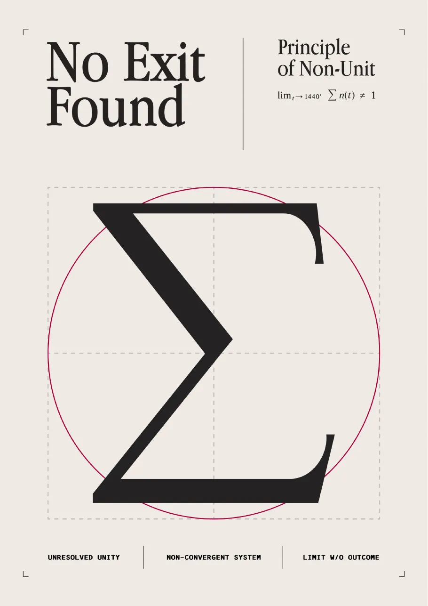
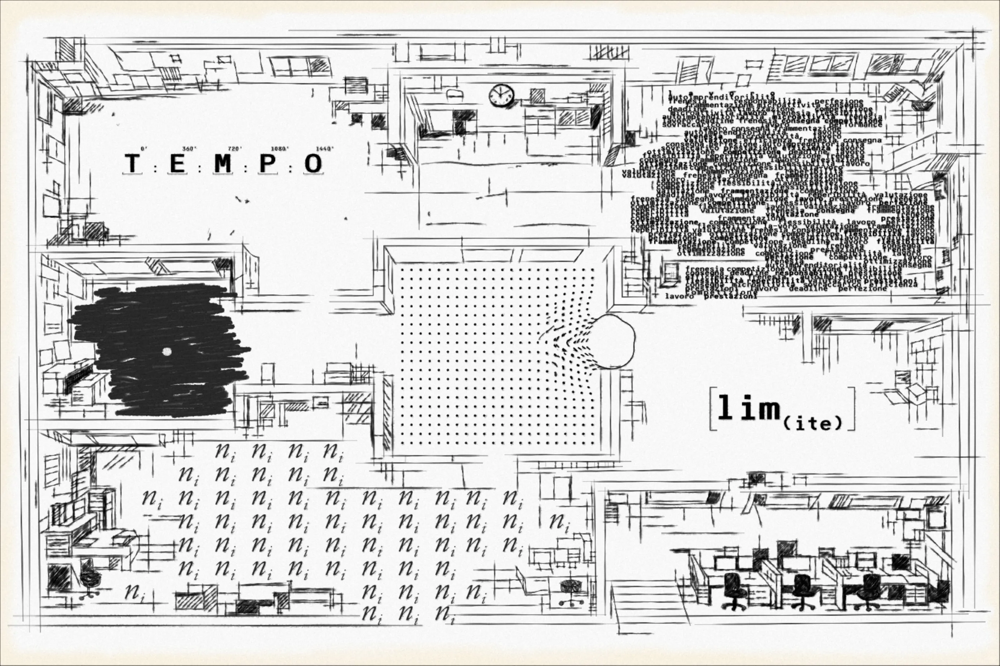
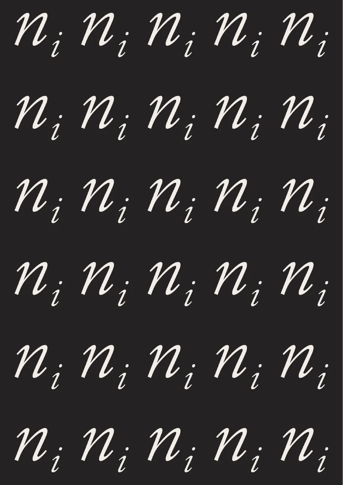
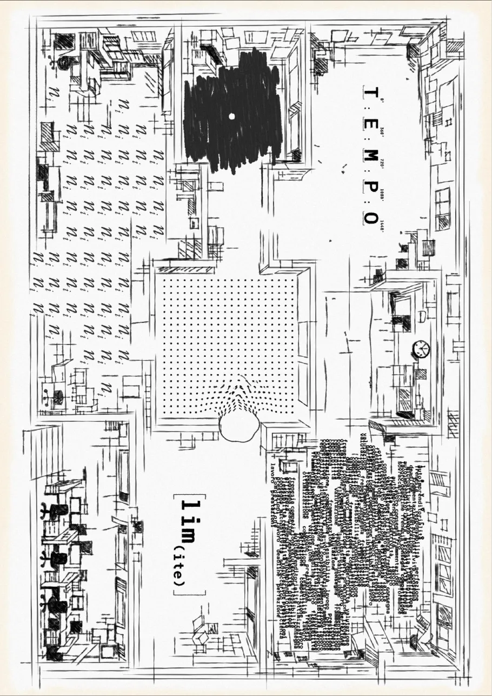
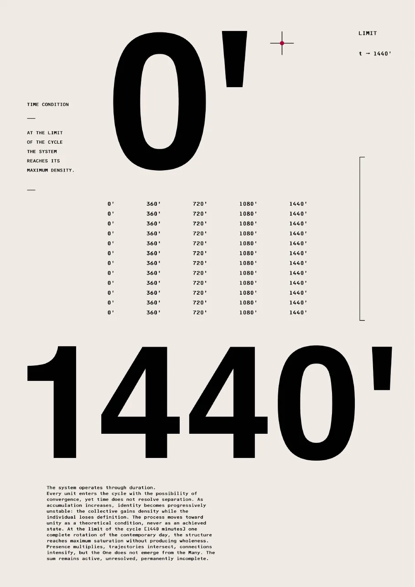
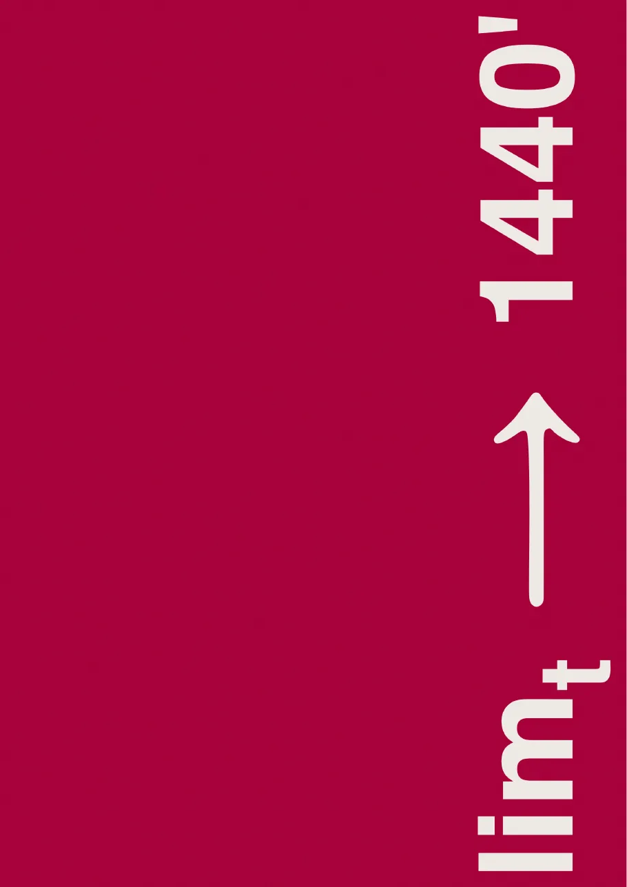
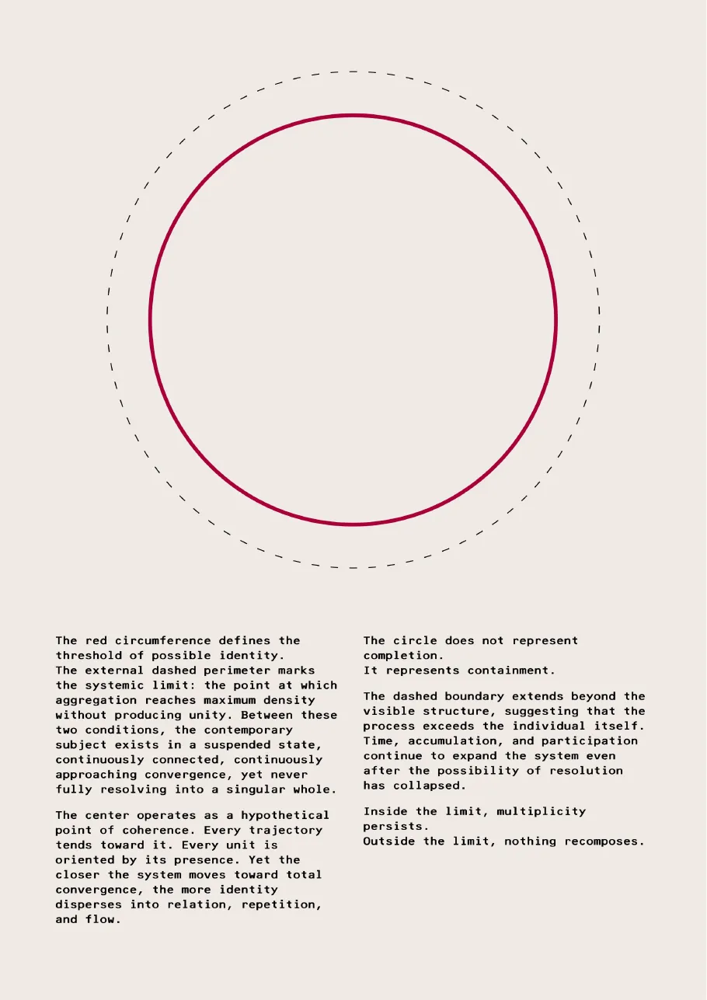
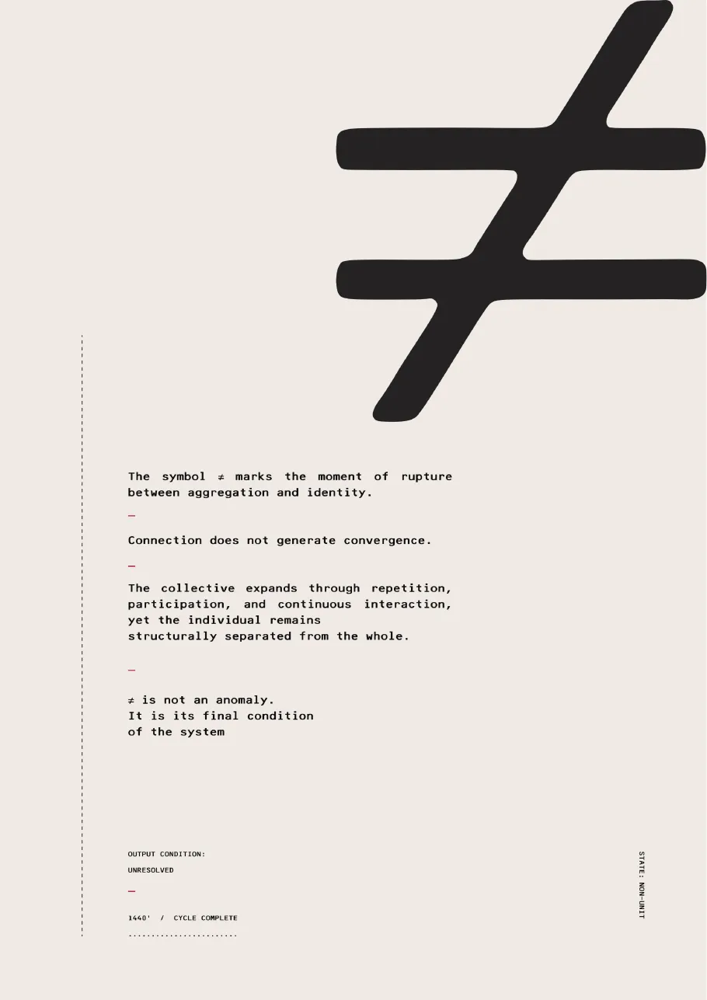
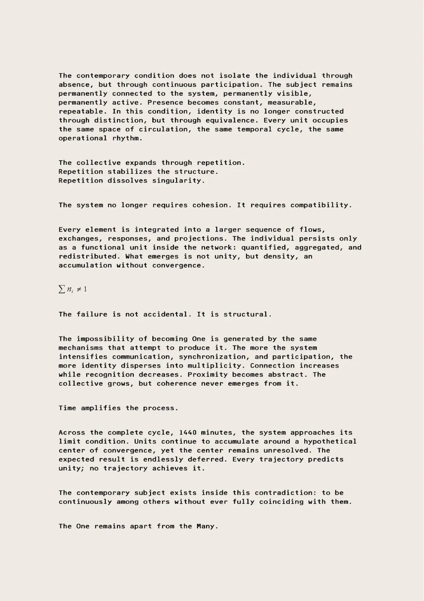
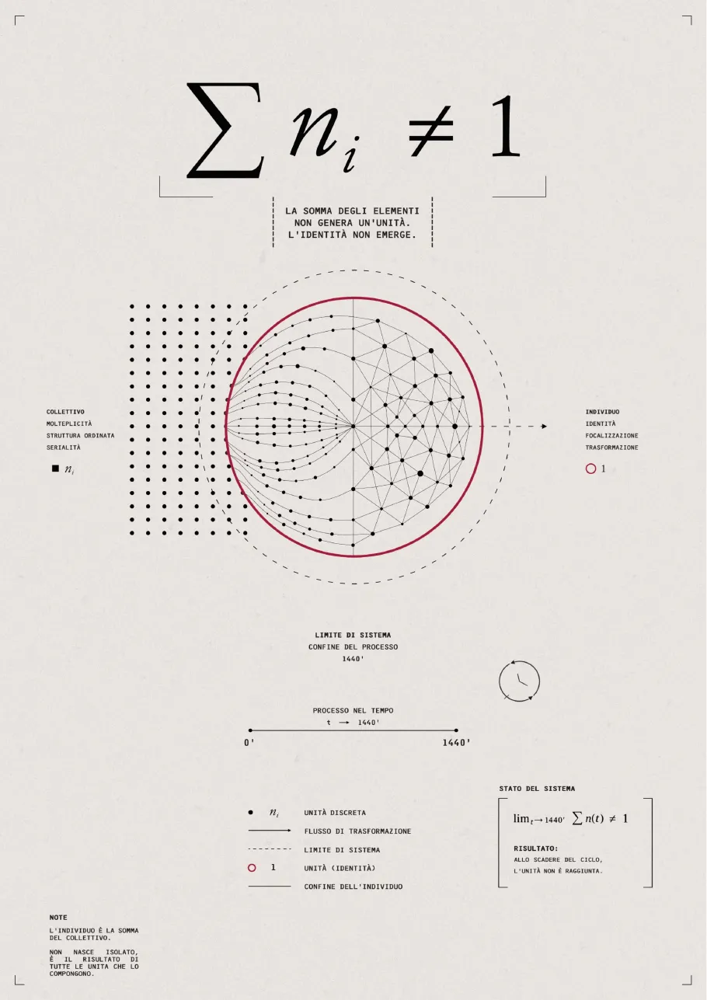

Progetto grafico · esame, Accademia Albertina
No Exit Found
Tre persone, un ufficio senza uscita: una mappa concettuale, una cartellina di tavole tipografiche e un render ispirato alle Backrooms.
Fatto in tre, in parti uguali, con Filippo Giuseppe Di-Carlo ed Erica Vasallo.

L'idea
Il progetto è un sudario che racchiude la visione di tre persone sulla propria contemporaneità. Nasce da una riflessione condivisa: insieme abbiamo scelto i concetti che meglio descrivono il presente, lavoro, tempo, ripetizione, isolamento, limite e alienazione.
Per renderli visibili abbiamo disegnato una mappa concettuale in forma di planimetria di un ufficio: l'ufficio è uno dei luoghi simbolo del nostro tempo e ogni stanza è dedicata a un concetto. L'immagine finale è un render 3D ispirato alle Backrooms, spazi infiniti, ripetitivi e senza riferimenti, metafora dell'alienazione dell'individuo nella società della performance.
La mappa
La planimetria: ogni stanza è un concetto, dal tempo al limite.

Le tavole






Testo e schema
La tavola di testo spiega il sistema; lo schema finale mette in una sola mappa il cerchio, il ciclo di 1440 minuti e la formula.


Facciamo qualcosa insieme.